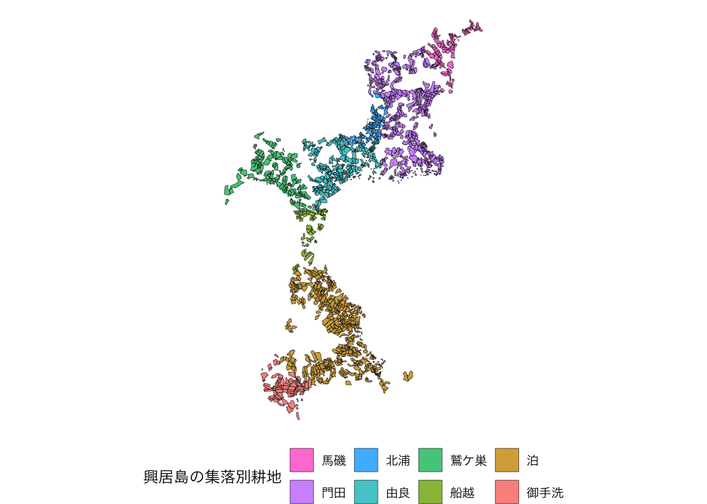
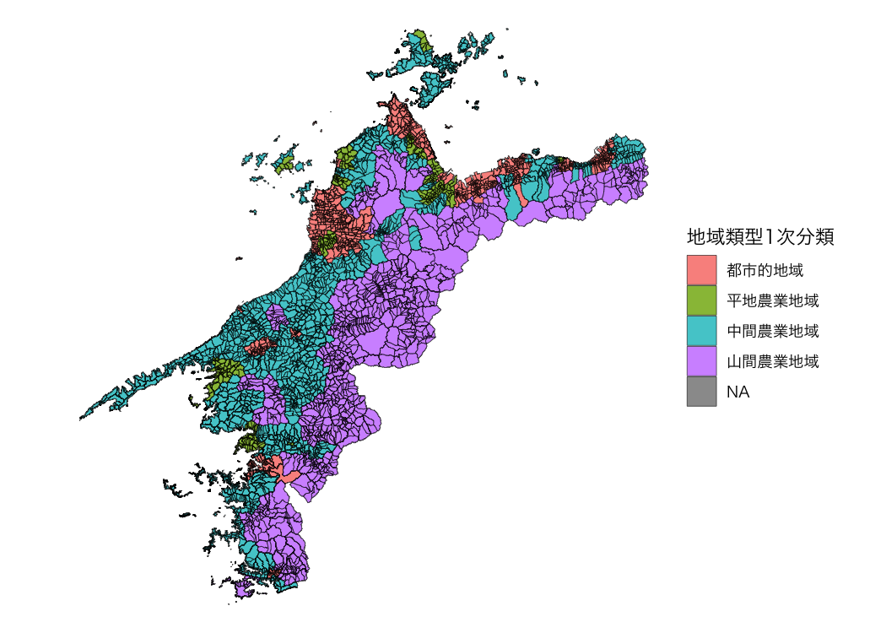

The fude package provides utilities to facilitate the handling of the Fude Polygon data downloadable from the Ministry of Agriculture, Forestry and Fisheries (MAFF) website. The word “fude” is a Japanese counter suffix used to denote land parcels.
Obtain data
Fude Polygon data can now be downloaded from two different MAFF websites (both available only in Japanese):
GeoJSON format:
https://open.fude.maff.go.jpFlatGeobuf format:
https://www.maff.go.jp/j/tokei/census/shuraku_data/2020/mb/
Install the package
You can install the released version of fude from CRAN with:
install.packages("fude")Or the development version from GitHub with:
# install.packages("devtools")
devtools::install_github("takeshinishimura/fude")Usage
Read Fude Polygon data
There are two ways to load Fude Polygon data, depending on how the data was obtained:
-
From a locally saved ZIP file:
This method works for both GeoJSON (from Obtaining Data #1) and FlatGeobuf (from Obtaining Data #2) formats. You can load a ZIP file saved on your computer without unzipping it.
-
By specifying a prefecture name or code:
This method is available only for FlatGeobuf data (from Obtaining Data #2). Provide the name of a prefecture (e.g., “愛媛”) or its corresponding prefecture code (e.g., “38”), and the required FlatGeobuf format ZIP file will be automatically downloaded and loaded.
d2 <- read_fude(pref = "愛媛")List the contents of Fude Polygon datal
ls_fude(d)
#> # A tibble: 20 × 7
#> name issue_year local_government_cd n pref_name city_name city_romaji
#> <chr> <int> <chr> <int> <chr> <chr> <chr>
#> 1 2022_38… 2022 382019 72045 愛媛県 松山市 Matsuyama-…
#> 2 2022_38… 2022 382027 43396 愛媛県 今治市 Imabari-shi
#> 3 2022_38… 2022 382035 61683 愛媛県 宇和島市 Uwajima-shi
#> 4 2022_38… 2022 382043 37753 愛媛県 八幡浜市 Yawatahama…
#> 5 2022_38… 2022 382051 15734 愛媛県 新居浜市 Niihama-shi
#> 6 2022_38… 2022 382060 63244 愛媛県 西条市 Saijo-shi
#> 7 2022_38… 2022 382078 37570 愛媛県 大洲市 Ozu-shi
#> 8 2022_38… 2022 382108 33302 愛媛県 伊予市 Iyo-shi
#> 9 2022_38… 2022 382132 34781 愛媛県 四国中央市…… Shikokuchu…
#> 10 2022_38… 2022 382141 73676 愛媛県 西予市 Seiyo-shi
#> 11 2022_38… 2022 382159 24235 愛媛県 東温市 Toon-shi
#> 12 2022_38… 2022 383562 2195 愛媛県 上島町 Kamijima-c…
#> 13 2022_38… 2022 383864 22823 愛媛県 久万高原町…… Kumakogen-…
#> 14 2022_38… 2022 384011 8634 愛媛県 松前町 Matsumae-c…
#> 15 2022_38… 2022 384020 7042 愛媛県 砥部町 Tobe-cho
#> 16 2022_38… 2022 384224 27131 愛媛県 内子町 Uchiko-cho
#> 17 2022_38… 2022 384429 23429 愛媛県 伊方町 Ikata-cho
#> 18 2022_38… 2022 384844 9089 愛媛県 松野町 Matsuno-cho
#> 19 2022_38… 2022 384887 16550 愛媛県 鬼北町 Kihoku-cho
#> 20 2022_38… 2022 385069 22931 愛媛県 愛南町 Ainan-choRename the local government code
Note: This feature is available only for data obtained from GeoJSON (Obtaining Data #1).
Convert local government codes into Japanese municipality names for easier management.
dro <- rename_fude(d)
names(dro)
#> [1] "2022_松山市" "2022_今治市" "2022_宇和島市" "2022_八幡浜市"
#> [5] "2022_新居浜市" "2022_西条市" "2022_大洲市" "2022_伊予市"
#> [9] "2022_四国中央市" "2022_西予市" "2022_東温市" "2022_上島町"
#> [13] "2022_久万高原町" "2022_松前町" "2022_砥部町" "2022_内子町"
#> [17] "2022_伊方町" "2022_松野町" "2022_鬼北町" "2022_愛南町"You can also rename the columns to Romaji instead of Japanese.
dro <- d |>
rename_fude(suffix = TRUE, romaji = "title", quiet = FALSE)
#> 2022_382019 -> 2022_Matsuyama-shi
#> 2022_382027 -> 2022_Imabari-shi
#> 2022_382035 -> 2022_Uwajima-shi
#> 2022_382043 -> 2022_Yawatahama-shi
#> 2022_382051 -> 2022_Niihama-shi
#> 2022_382060 -> 2022_Saijo-shi
#> 2022_382078 -> 2022_Ozu-shi
#> 2022_382108 -> 2022_Iyo-shi
#> 2022_382132 -> 2022_Shikokuchuo-shi
#> 2022_382141 -> 2022_Seiyo-shi
#> 2022_382159 -> 2022_Toon-shi
#> 2022_383562 -> 2022_Kamijima-cho
#> 2022_383864 -> 2022_Kumakogen-cho
#> 2022_384011 -> 2022_Matsumae-cho
#> 2022_384020 -> 2022_Tobe-cho
#> 2022_384224 -> 2022_Uchiko-cho
#> 2022_384429 -> 2022_Ikata-cho
#> 2022_384844 -> 2022_Matsuno-cho
#> 2022_384887 -> 2022_Kihoku-cho
#> 2022_385069 -> 2022_Ainan-choGet agricultural community boundary data
Download the agricultural community boundary data, which corresponds to the Fude Polygon data, from the MAFF website: https://www.maff.go.jp/j/tokei/census/shuraku_data/2020/ma/ (available only in Japanese).
b <- get_boundary(d)Combine Fude Polygons with agricultural community boundaries
You can easily combine Fude Polygons with agricultural community boundaries to create enriched spatial analyses or maps.
library(ggplot2)
db <- combine_fude(d2, b, city = "松山市", rcom = "由良|北浦|鷲ケ巣|門田|馬磯|泊|御手洗|船越")
ggplot() +
geom_sf(data = db$fude, aes(fill = rcom_name), alpha = .8) +
guides(fill = guide_legend(reverse = TRUE, title = "興居島の集落別耕地")) +
theme_void() +
theme(legend.position = "bottom") +
theme(text = element_text(family = "Hiragino Sans"))
出典：農林水産省「筆ポリゴンデータ（2025年度公開）」および「農業集落境界データ（2020年度）」を加工して作成。
Data enables extraction based on municipality names, former municipality names, and agricultural community names.
Note: This feature is available only for data obtained from FlatGeobuf (Obtaining Data #2).
extract_fude(d2, city = "松山市", kcity = "興居島")
#> Simple feature collection with 1691 features and 6 fields
#> Geometry type: MULTIPOLYGON
#> Dimension: XY
#> Bounding box: xmin: 132.6373 ymin: 33.87055 xmax: 132.6991 ymax: 33.92544
#> Geodetic CRS: JGD2000
#> # A tibble: 1,691 × 7
#> polygon_uuid land_type issue_year point_lng point_lat key
#> * <chr> <dbl> <dbl> <dbl> <dbl> <chr>
#> 1 5a72b4ef-b5f4-465e-9948-e9314… 200 2025 133. 33.9 3820…
#> 2 c69d86d5-1fb2-4528-a87b-155d8… 200 2025 133. 33.9 3820…
#> 3 627134ea-919c-4769-bd94-be16c… 200 2025 133. 33.9 3820…
#> 4 f2631019-d16e-42f9-8501-75f26… 200 2025 133. 33.9 3820…
#> 5 8fedb70d-4bb9-4447-879b-a0eea… 200 2025 133. 33.9 3820…
#> 6 cd235cdf-da51-4ead-ad50-efc6e… 200 2025 133. 33.9 3820…
#> 7 5853b7a1-62c3-4973-9e79-cabd3… 200 2025 133. 33.9 3820…
#> 8 5e090780-6d16-4b9e-aca9-c5622… 200 2025 133. 33.9 3820…
#> 9 90de4abf-e972-4031-987f-f3391… 200 2025 133. 33.9 3820…
#> 10 e5ade914-c803-42d1-9fa8-0921b… 200 2025 133. 33.9 3820…
#> # ℹ 1,681 more rows
#> # ℹ 1 more variable: geometry <MULTIPOLYGON [°]>Explore Fude Polygon data
You can explore Fude Polygon data interactively.
library(shiny)
s <- shiny_fude(db, rcom = TRUE)
# shinyApp(ui = s$ui, server = s$server)Read data from the MAFF database
You can read data from the MAFF database (地域の農業を見て・知って・活かすDB).
library(dplyr)
b1 <- get_boundary(d2, path = "~", boundary_type = 1, quiet = TRUE)
b2 <- get_boundary(d2, path = "~", boundary_type = 2, quiet = TRUE)
b3 <- get_boundary(d2, path = "~", boundary_type = 3, quiet = TRUE)
m1 <- b1 |>
read_ikasudb("~/IA0001_2023_2020_38.xlsx") |>
read_ikasudb("~/SA1009_2020_2020_38.xlsx") |>
read_ikasudb("~/GC0001_2019_2020_38.xlsx") |>
mutate(
地域類型1次分類 = factor(地域類型1次分類, labels = c("都市的地域", "平地農業地域", "中間農業地域", "山間農業地域"))
)
ggplot() +
geom_sf(data = m1, aes(fill = 地域類型1次分類), alpha = .8) +
theme_void() +
theme(text = element_text(family = "Hiragino Sans"))
資料：農林水産省「農業集落境界データ（2020年度）」を加工して作成。
Use the mapview package
If you want to use mapview(), do the following.
db1 <- combine_fude(d, b, city = "伊方町")
db2 <- combine_fude(d, b, city = "八幡浜市")
db3 <- combine_fude(d, b, city = "西予市", kcity = "三瓶|二木生|三島|双岩")
db <- bind_fude(db1, db2, db3)
db$fude <- sf::st_transform(db$fude, crs = 3857)
library(mapview)
mapview(db$fude, zcol = "rcom_name", layer.name = "農業集落名")